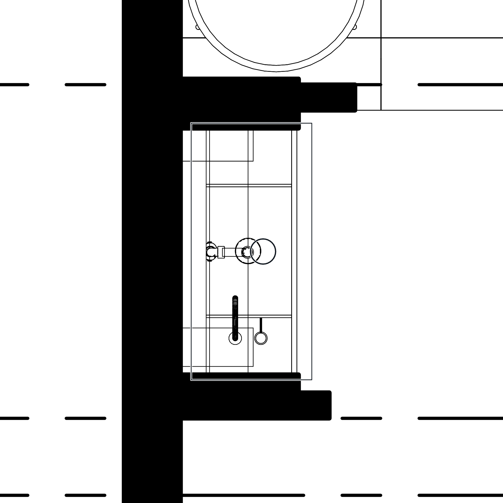
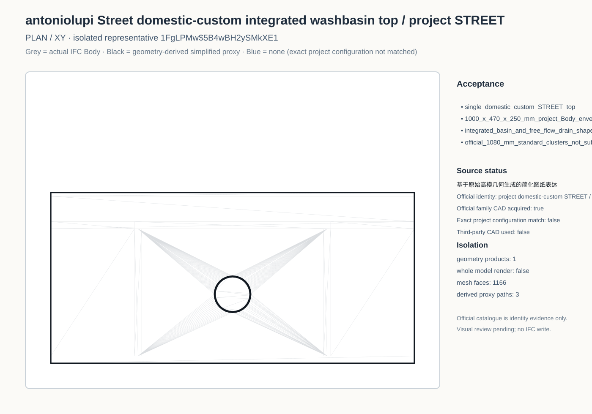
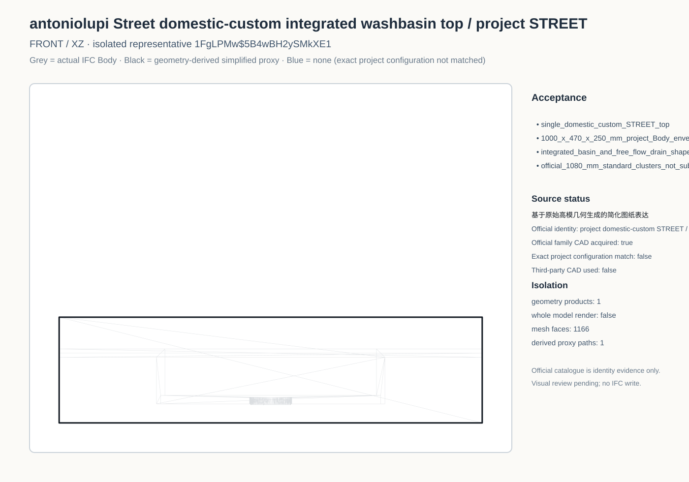
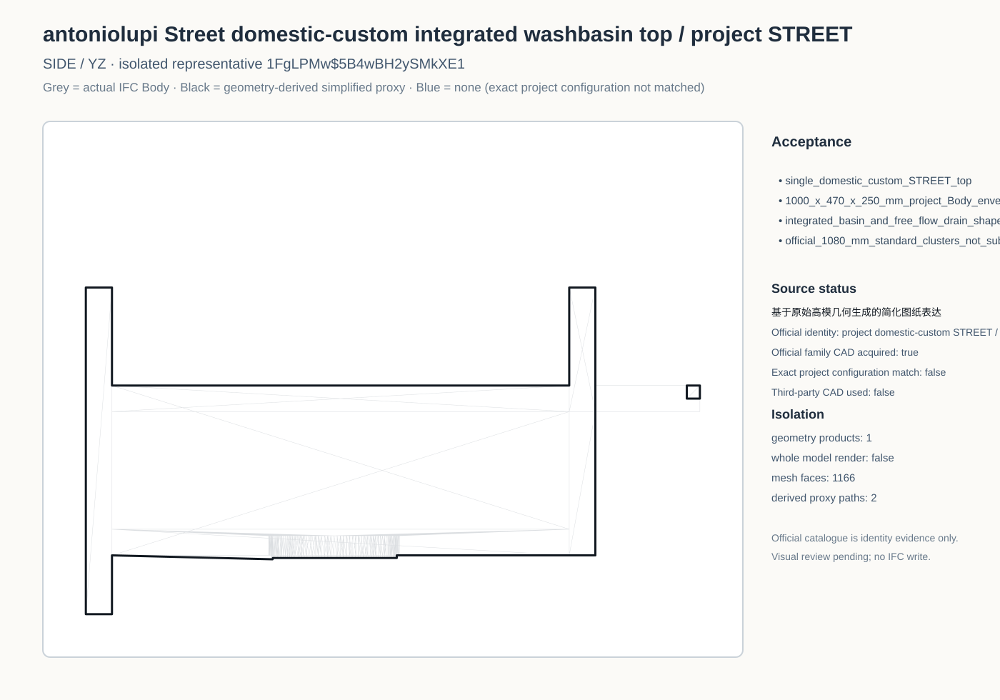
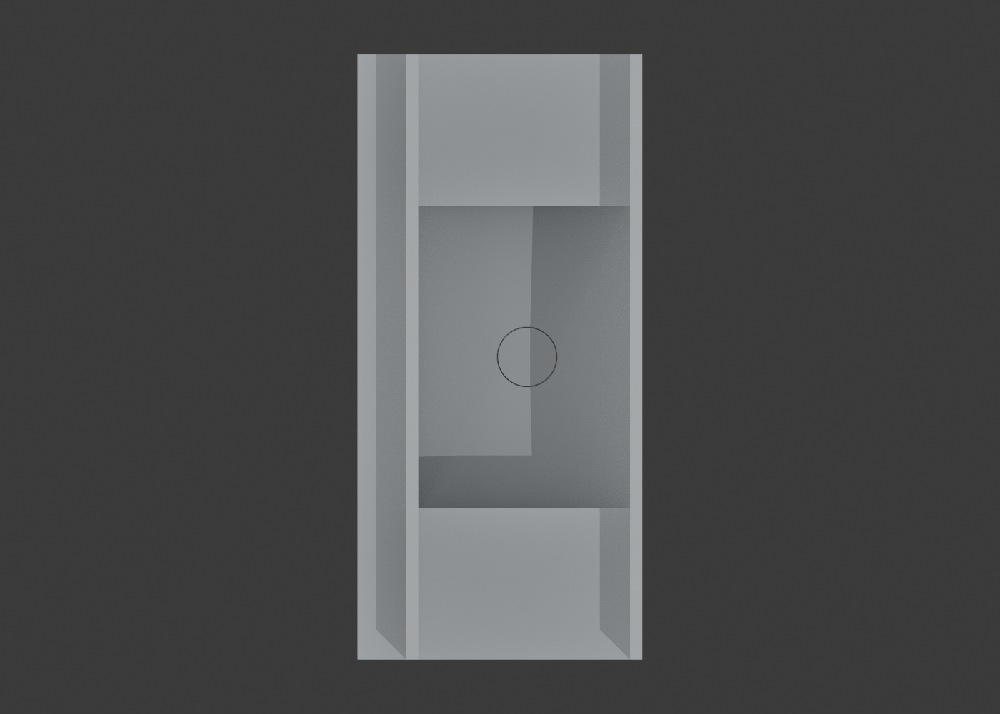
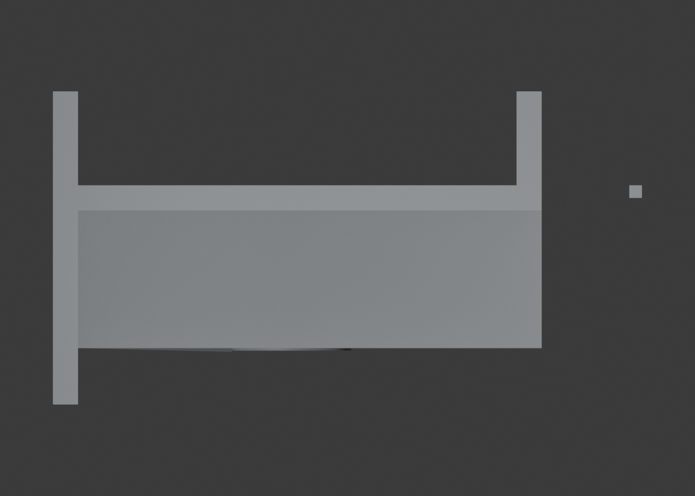
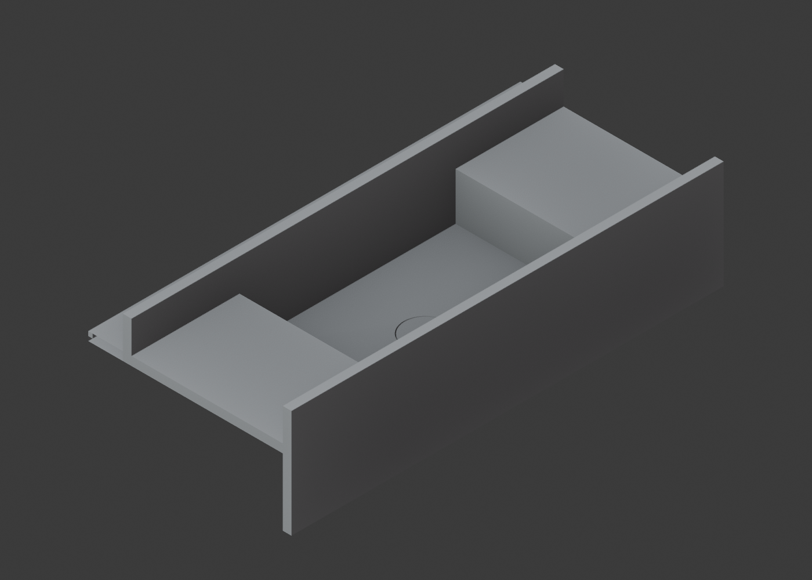

Sanitary plan

Black line = simplified drawing representation derived from the original high-poly geometry. The official native DXF is archived, but its IFC-description cluster is 1080 × 400 × 250 mm and the nearest 470 mm-deep standard cluster is 1080 × 470 × 250 mm. Neither matches the domestic-custom project Body at 1000 × 470 × 250 mm, so no blue standard-family line is substituted.







7a50b87e8f48a7c2bfbaa9f1dabdfca7155fa684b2325c66aa1ae15c8ab0a25c